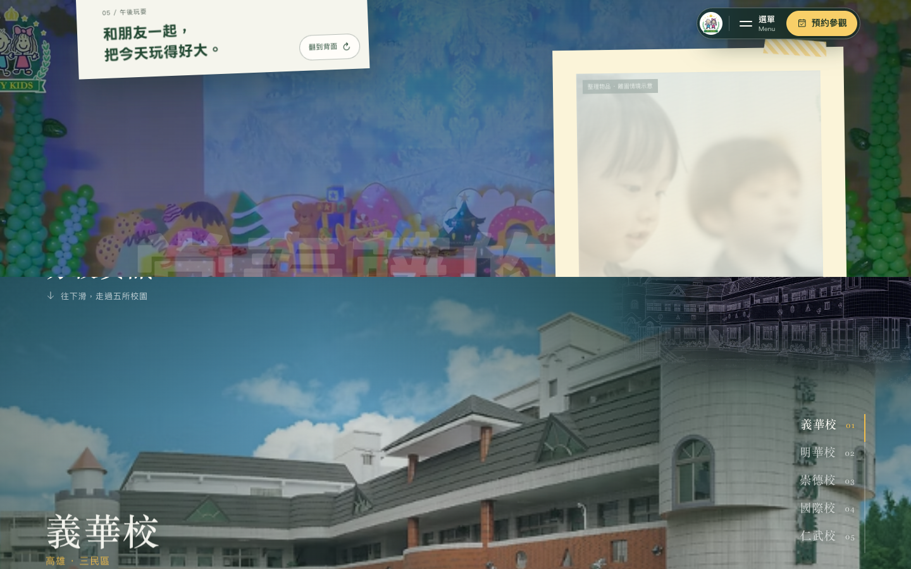
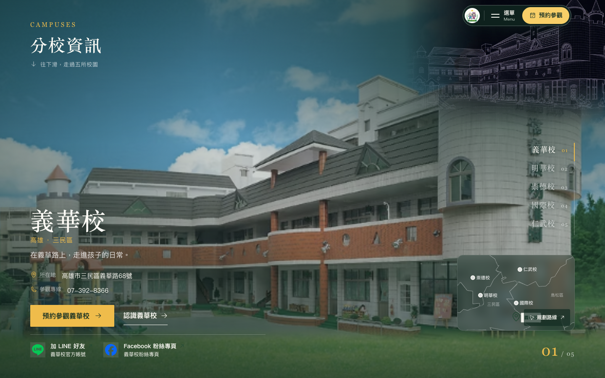
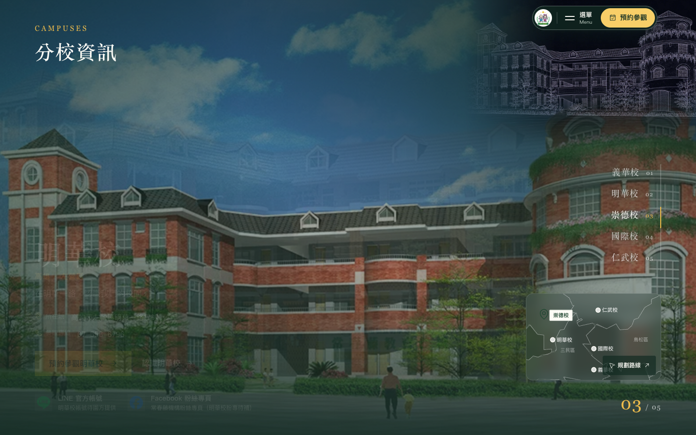
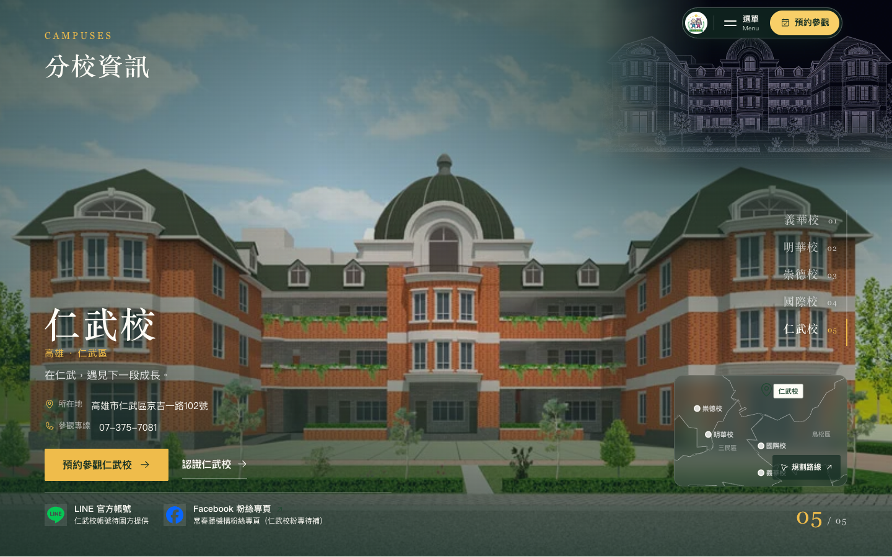
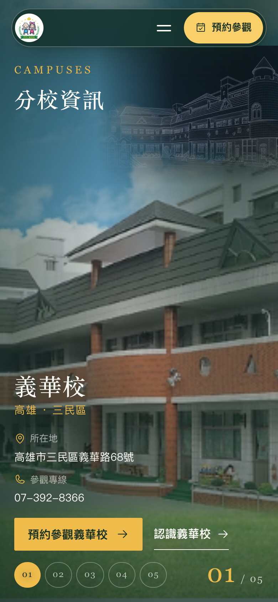
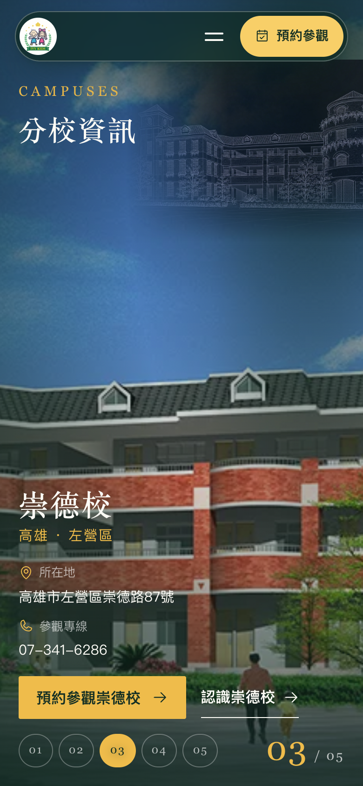
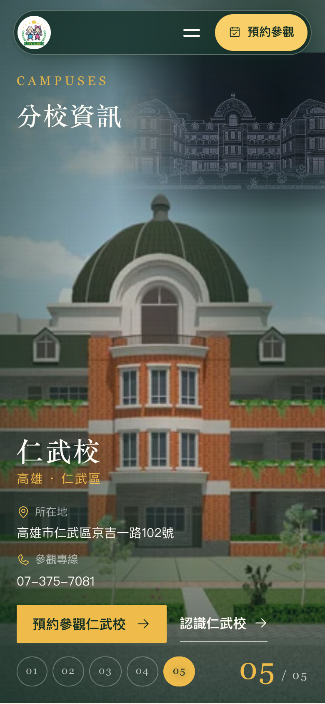

a 全幅顯影 照片鋪滿視窗，一校一校淡入
最接近上方「孩子的一天」的感受：整個視窗就是校舍照片，深綠底、暖黃點綴。校名與聯絡資訊壓在左下，右側一列五校名稱兼進度，右下角一張半透明小地圖跟著換圖釘。右上角保留現在站上的五校建築線稿（反相成白線疊在局部暗角上，跟著校區淡出淡入）。切校時照片交叉淡入、文字從下方浮起，停留期間照片有一點點緩慢推近。
開啟 a ↗






- 好處
- 最有氣勢、和上一區塊同一種語彙；手機版幾乎不用另外設計。
- 代價
- 目前每校只有 640px 的外觀照，鋪滿 1440 以上會軟；深色底讓整個首頁下半段連續兩段都是暗的。